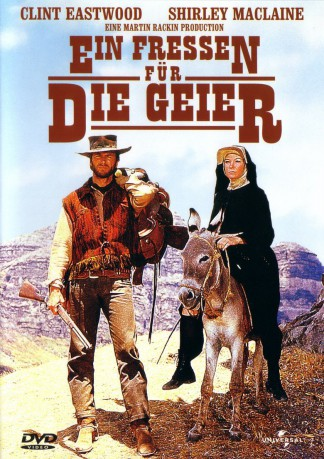

#1988 Ein Fressen für die Geier
Alternativ: Two Mules for Sister Sara
 
 IMDB-Wertung: 7.0 / 10
IMDB-Wertung: 7.0 / 10  Metascore: 0
Metascore: 0 
US-Western mit Clint Eastwood und Shirley MacLaine in den Hauptrollen. Irgendwo in der mexikanischen Wüste. Der Söldner Hogan rettet die Prostituierte Sara (als Nonne verkleidet) vor drei betrunkenen Cowboys. Gemeinsam machen sie sich aus, um gegen die Franzosen zu kämpfen. Nur während Sara für Mexikos Befreiung kämpft, will Hogan einen Schatz finden.
Jahr: 1970
Dauer: 116 Minuten
FSK: 16
Land: USA Studio: A Universal PictureTonspuren:
Untertitel:
Auflösung: 1080p (1920x816) Größe: 8130 MB
Genre: Komödie, Abenteuer, Krieg, Western
Regisseur: Don Siegel
Drehbuch: Budd Boetticher, Albert Maltz
Soundtrack: Ennio Morricone
Darsteller:
Datei: X:\HD-Western-1960-1979\Fressen für die Geier, Ein (1970, FSK16, 1920x816).mkv seit 16.09.2015
Festplatte: HD Eastern+Western
 Es gibt insgesamt 110 Filme in der Gruppe 'HD-Western-1960-1979'
Es gibt insgesamt 110 Filme in der Gruppe 'HD-Western-1960-1979'